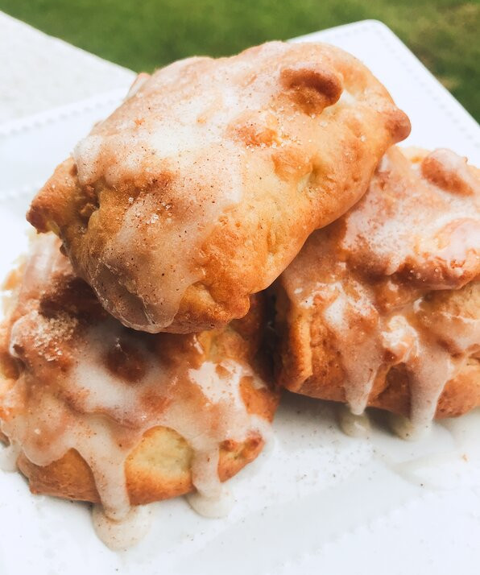

Air Fryer Apple Fritters

Description
These yummy apple fritters can be made in under 30 minutes with the help of an air fryer! Serve with vanilla ice cream if desired.
Ingredients
- cooking spray
- 1 cup all-purpose flour
- ¼ cup white sugar
- ¼ cup milk
- 1 egg
- 1 ½ teaspoons baking powder
- 1 pinch salt
- 2 tablespoons white sugar
- ½ teaspoon ground cinnamon
- 1 apple - peeled, cored, and chopped
Steps
- Preheat an air fryer to 350 degrees F (175 degrees C). Place a parchment paper round into the bottom of the air fryer. Spray with nonstick cooking spray.
- Mix flour, 1/4 cup sugar, milk, egg, baking powder, and salt together in a small bowl. Stir until combined.
- Mix 2 tablespoons sugar with cinnamon in another bowl and sprinkle over apples until coated. Mix apples into the flour mixture until combined.
- Drop fritters using a cookie scoop onto the bottom of the air fryer basket.
- Air-fry in the preheated fryer for 5 minutes. Flip fritters and cook until golden, about 5 minutes more.
- Meanwhile, mix confectioners' sugar, milk, caramel extract, and cinnamon together in a bowl. Transfer fritters to a cooling rack and drizzle with glaze.
All the ingredients and images comes from allrecipes.com.